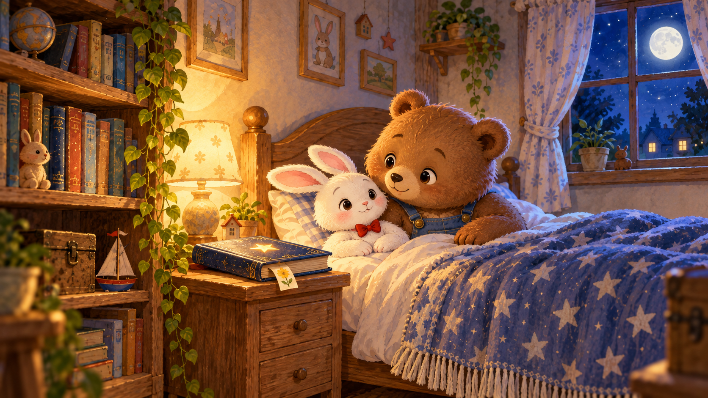

挑一本，慢慢讀
每冊規劃 30 個夜晚。從第一頁開始，也可以挑喜歡的一篇。
第一冊的故事
第 001–030 夜，目前開放 30 篇試閱。
完整目錄暫時無法載入。你仍可打開下方第一篇故事，或重新整理頁面。
更多晚安故事，準備中
這冊規劃 30 篇，完成試閱準備後，
就會出現在這裡。
翻看第一冊 30 個夜晚的目錄
本冊 30 篇均可試閱，插畫與聲音仍待家長整體確認。
給一起讀故事的家長
適合三歲起親子共讀，每篇長度依故事內容而不同，以播放器顯示為準。不必急著回答問題，也可以只是看看畫、聽聽故事，再說晚安。
第一冊 30 篇有聲試閱已開放，旁白為 Serena A 候選聲音，可能帶非台灣國語口音；第二冊《台灣奇妙旅行》全冊 30 篇，目前開放 8 篇圖文有聲試閱，使用 amberchen 音色。旁白只朗讀五幕故事正文；幕名、知識卡與親子提問留在畫面，不插入語音。你按下播放後，聲音才會開始。
這是公開候選試閱，持有網址的人都可以觀看；尚未完成美術、聲音及正式出版相關驗收。第一冊書封為版面示意；第二冊封面為待確認候選。第二冊目前開放的故事各有五幕候選插畫與旁白，待你確認；其餘 22 篇圖音持續製作中。